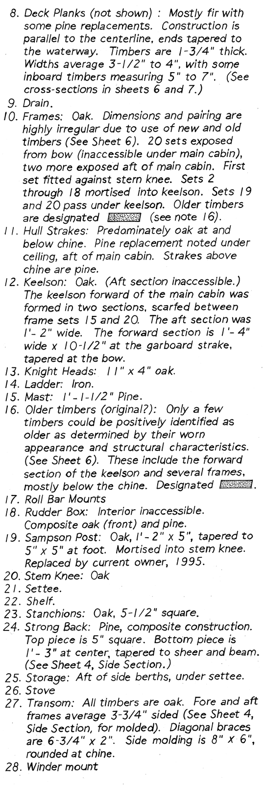

Original scan pixels: [10944, 602, 13454, 8027]; source SHA-256: bb1d4a25c174f080601e9248d7445ea734ca6092790c4a931ddecf51de027cf3.
Native lossless view · Raw OCR · Word coordinates/confidence · Manifest

Deck planks are mostly fir with some pine replacements, parallel to centreline, ends tapered to waterway. Thickness 1-3/4 inches; typical widths 3-1/2 to 4 inches, some inboard members 5 to 7 inches.
Frames are oak; dimensions and pairing are highly irregular with old and new timbers. Twenty sets exposed from bow, inaccessible under main cabin; two more aft of main cabin. The printed note says first set against STERN knee. Sets 2–18 mortised into keelson; sets 19/20 pass under keelson. Preserve the printed wording; frame numbering must be interpreted separately from deck-beam numbering.
Hull strakes predominantly oak at/below chine; pine replacement noted under ceiling aft of main cabin. Above-chine strakes are pine.
Oak keelson, aft section inaccessible. Forward of main cabin it has two sections scarfed between frame sets 15 and 20. Aft section 1 foot 2 inches wide; forward section 1 foot 4 inches wide x 10-1/2 inches at garboard, tapered at bow.
Knight heads: 11 x 4-inch oak.
Only a few timbers could positively be identified as older, possibly original, by wear and structural characteristics: forward keelson and several frames, mostly below chine. The survey uses a graphic designation.
Rudder box interior inaccessible; composite oak front and pine.
Sampson post: oak, 1 foot 2 inches x 5 inches at head, tapering to 5 x 5-inch foot; mortised into stem knee. Replaced by owner in 1995.
Interior stanchions: oak, 5-1/2-inch square.
Strong back: composite pine. Top piece 5-inch square; bottom piece 1 foot 3 inches at centre, tapered to sheer and beam. See sheet 4 side section.
Transom: all oak. Fore/aft frames average 3-3/4 inches SIDED; molded dimension referred to sheet 4. Diagonal braces 6-3/4 x 2 inches; side molding 8 x 6 inches, rounded at chine.
8. Deck Planks (not shown) : Mostly fir with some pine replacements. Construction is parallel to the centerline, ends tapered to _ the waterway. Timbers are |-3/4" thick. Widths average 3-//2" to 4", with some inboard timbers measuring 5" to 7". (See cross-sections in sheets 6 and 7.) 9. Drain, . 10. Frames: Oak. Dimensions and pairing are highly irregular due to use of new and old timbers (See Sheet 6). 20 sets exposed from bow (inaccessible under main cabin), two more exposed aft of main cabin. First set fitted against stern knee. Sets 2 through 18 mortised into keelson. Sets 19 and 20 pass under keelson. Older timbers are designated (see note /6). ! 1. Hull Strakes: Predaminately oak at and below chine. Pine replacement noted under ceiling, aft of main cabin. Strakes above chine are pine. 12. Keelson: Oak. (Aft section inaccessible.) The keelson forward of the main cabin was formed in two sections, scarfed between frame sets 15 and 20. The aft section was '- 2" wide. The forward section is |'- 4" wide x 10-!/2" at the garboard strake, tapered at the bow. 13. Knight Heads: | 1" x 4" oak. 14, Ladder: Iron. 15. Mast: |'-1-172" Pine. 16. Older timbers (original?): Only a few timbers could be positively identified as older as determined by their worn appearance and structural characteristics. (See Sheet 6). These include the forward section of the keelson and several frames, mostly below the chine. Designated ; 17. Roll Bar Mounts 18. Rudder Box: Interior inaccessible. Composite oak (front) and pine. 19. Sampson Post: Oak, I'- 2" x 5", tapered to 5" x 5" at foot. Mortised into stem knee. Replaced by current owner, !995. 20. Stem Knee: Oak 21. Settee. . 22. Shelf. . 23. Stanchions: Oak, 5-1/2" square. 24. Strong Back: Pine, composite construction. Top piece is 5" square. Bottom piece is |'- 3" at center, tapered to sheer and beam. (See Sheet 4, Side Section.) 25. Storage: Aft of side berths, under settee. 26. Stove 27. Transom: All timbers are oak. Fore and aft frames avetage 3-3/4" sided (See Sheet 4, Side Section, for molded). Diagonal braces are 6-3/4" x 2". Side molding is 8" x 6", rounded at chine. 28. Winder mount